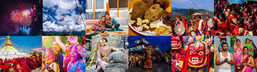
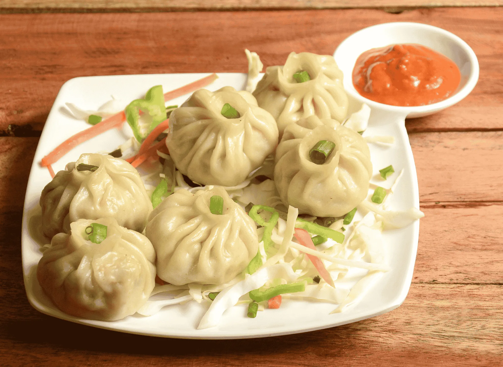
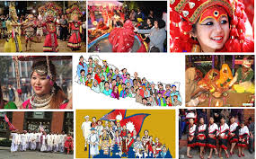

Culture, Food & Festivals
Some Pictures of Festivals:
Picture of foods:
Picture of Traditions:
Nepal’s culture blends Hindu, Muslim & Buddhist traditions with dozens of ethnic groups.
- Major festivals: Dashain (largest), Tihar (festival of lights), Eid, Nepali New Year.
- Foods: dal bhat (staple), momo (dumplings), sel roti (festival bread), Newari cuisine.
- Traditions: diverse ethnic dress, music, dance, and handicrafts across provinces.